Pediatric Orthopedics
- Kids break bone, not ligament. The physis (growth plate) is the weak spot, so a child's “sprain” is often a Salter–Harris I. Kids also get buckle, greenstick and plastic deformation fractures, and they remodel remarkably.
- Salter–Harris: I through the physis; II physis + metaphysis (most common, distal radius); III physis + epiphysis; IV through all three; V crush. III and IV are intra-articular and need an anatomic reduction. V has the worst growth-arrest risk and is often missed. Every growth plate injury goes to ortho and is followed 1–2 years.
- Apophyses (tendon attachments) avulse with a sprint (anterior inferior iliac spine) or get overuse apophysitis: Osgood–Schlatter (tibial tubercle), Sinding-Larsen (lower patella), Sever's (calcaneus). Benign, gone within about 2 years.
- DDH: firstborn, female, breech, family history. Barlow pushes it out, Ortolani pops it back in (both unreliable after 3–6 months); limited abduction and a positive Galeazzi. Pavlik harness up to 6 months.
- Clubfoot = plantarflexed ankle, varus heel and forefoot: Ponseti (weekly casts, Achilles tenotomy, boots and bars). Bowlegs are normal to age 2, knock-knees 3–7. Scoliosis is rarely painful; it's a rib hump on the Adams forward bend, and girls, pre-menarchal, big and thoracic curves progress.
Learning Objectives
- Develop an approach to pediatric musculoskeletal pathology.
- Describe the unique fracture types and overuse injuries that occur in children.
- Explain the Salter–Harris classification of fractures involving the physis and their complications.
- Define developmental dysplasia of the hip, list its risk factors, explain the exam manoeuvres and outline management.
- Define clubfoot and outline a timeline for its management.
- Describe a basic approach to rotational and angular variation of the legs, and the child with a limp.
- Define scoliosis and describe its assessment, investigation and treatment.
Dr. Caitlin Cassidy (Physical Medicine & Rehabilitation), five recordings (about 55 minutes) with four knowledge checks. The words for the parts of a bone are also in 10.4, and closed reduction and casting in 10.5.
Injuries
Why children's bones break differently, the elbow, the growth plate and the apophysis.
Kids Are Different
| Feature | In children |
|---|---|
| Bone | More porous and pliable; adult bone is more brittle |
| Periosteum | Thick, strong and very active: it builds width and drives a robust healing and remodelling response |
| Physis (growth plate) | Cartilage at the ends of long bones and a site of relative weakness. Injure it and you risk uneven growth or growth arrest. |
| Ligaments | Relatively strong, so the bone or physis fails first: fewer sprains and dislocations |
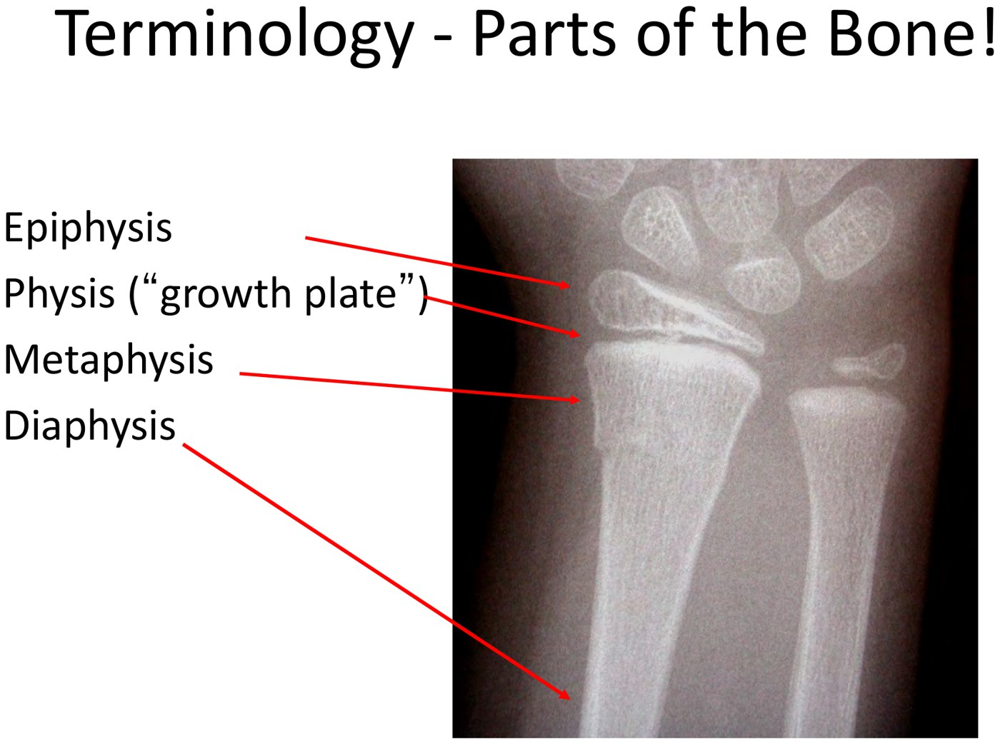
Epiphysis (the end), physis, metaphysis (the flare), diaphysis (the shaft). From the deck.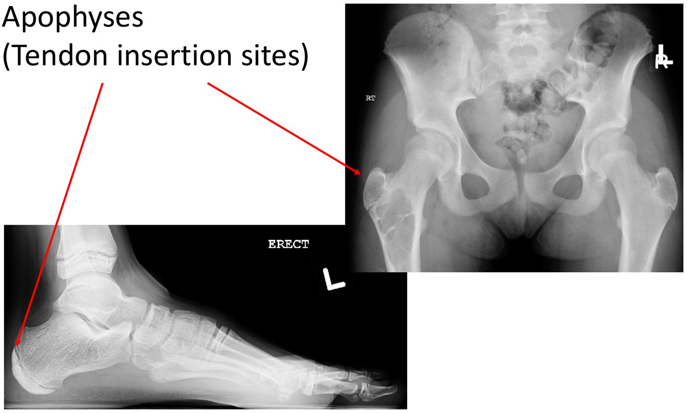
Apophyses: secondary ossification centres where tendons attach (calcaneus, pelvis). From the deck.How long bones grow. A hyaline cartilage model forms in utero. Bone replaces it at the primary ossification centre (diaphysis) and the secondary centres (epiphyses): endochondral ossification. The physis is the last cartilage left, and it closes at a different age in each bone, so what's normal on a child's x-ray depends on age.
Fractures and How They Heal
Most pediatric trauma is one limb and minor: falls from low heights and sport, then pedestrians struck by vehicles and vehicle operators (ATVs). In infants and toddlers, think of non-accidental injury.
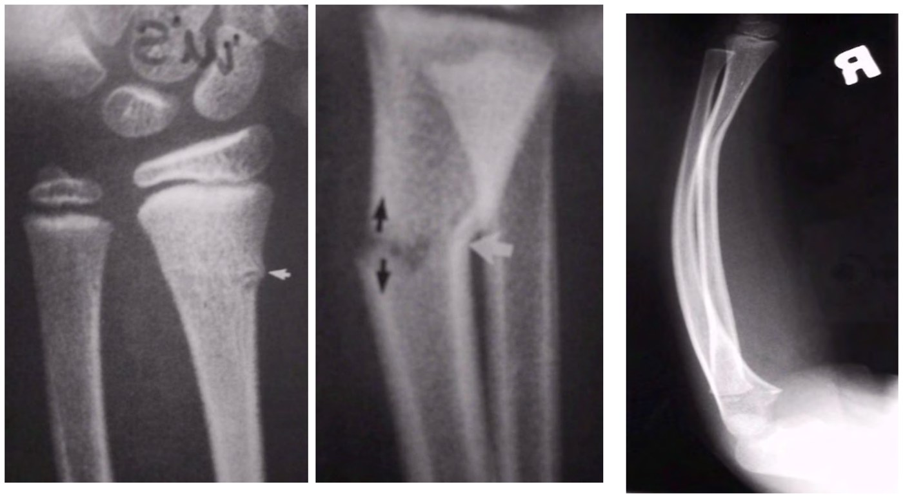
Healing is rarely the problem: “as long as the two bone ends are in the same room, they will heal together.” It's still easier to get the alignment right early than to fix it later, and what's acceptable depends on age. Remodelling is the growing skeleton restoring its pre-injury alignment in response to load.
| Remodels well | Remodels poorly | |
|---|---|---|
| Growth left | At least 2 years of growth remaining | Little growth left |
| Site | Metaphyseal fracture | Mid-shaft fracture with significant angulation or rotation; a displaced intra-articular fracture |
| Plane | Deformity in the plane of the joint's motion | Deformity out of plane |
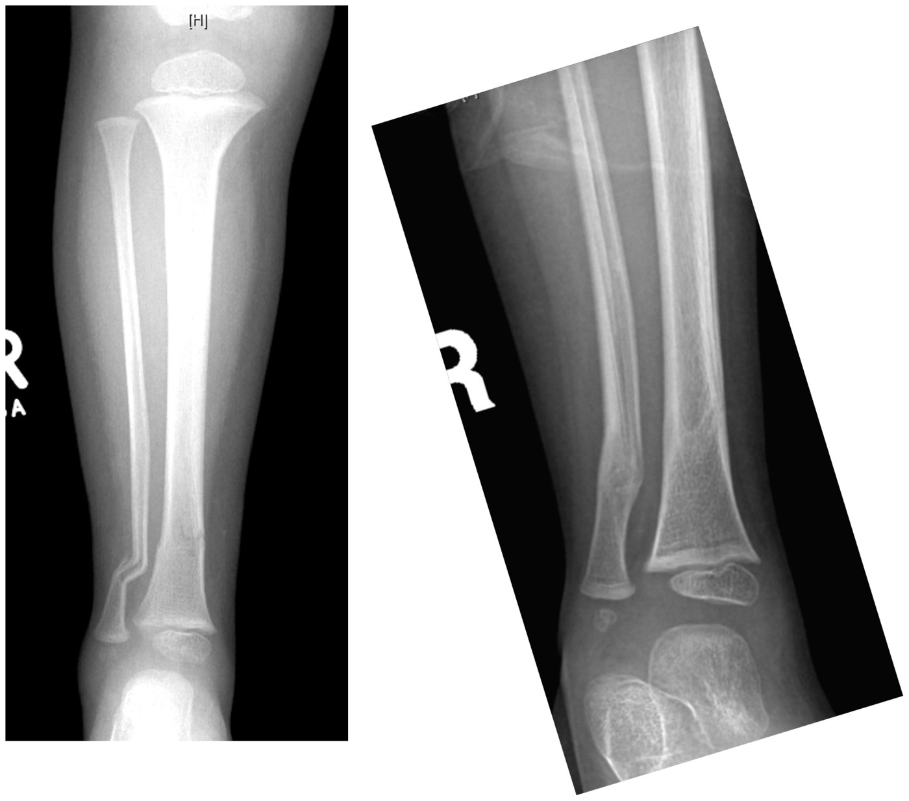
A 3-year-old: displaced distal fibula, no reduction, realigned on its own by 6 months. From the deck.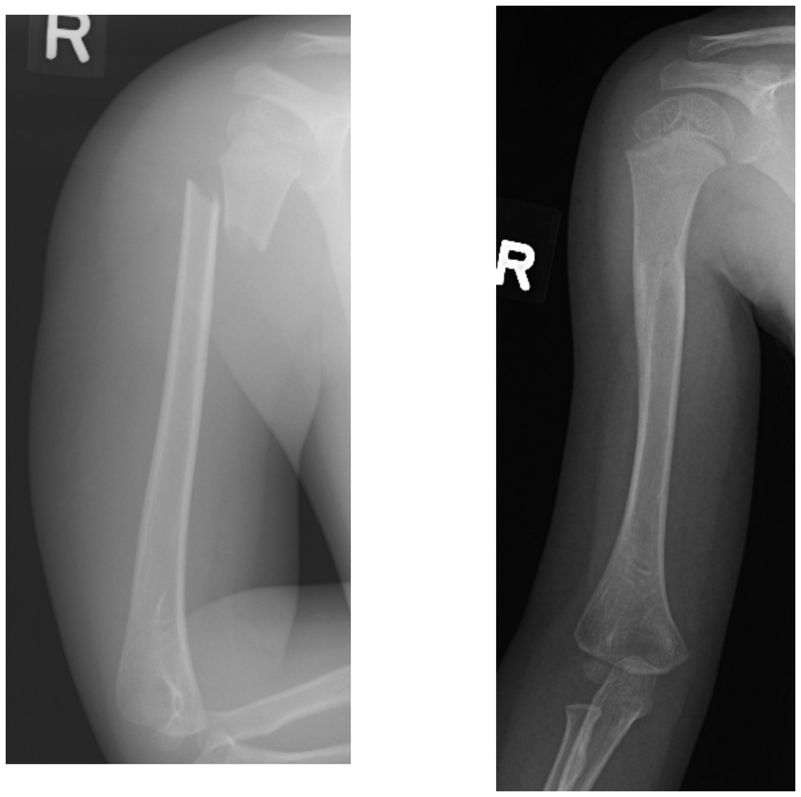
A 4-year-old: proximal humerus 100% displaced, treated with a sling only; remodelled by 7 months. From the deck.Closed reduction when the deformity is more than that bone can remodel: have everything ready first, then a haematoma block or conscious sedation (the most control), a splint or cast (how long depends on the site and fracture), always post-reduction films, and timely follow-up. Casting is an active treatment that takes skill.
| Why reductions fail |
|---|
| Not planned from the x-rays and the deformed limb |
| Details missed: the direction and size of the force (reverse it), translation as well as angulation, where the hands mould the cast |
| Too much padding, or a cast that's too short |
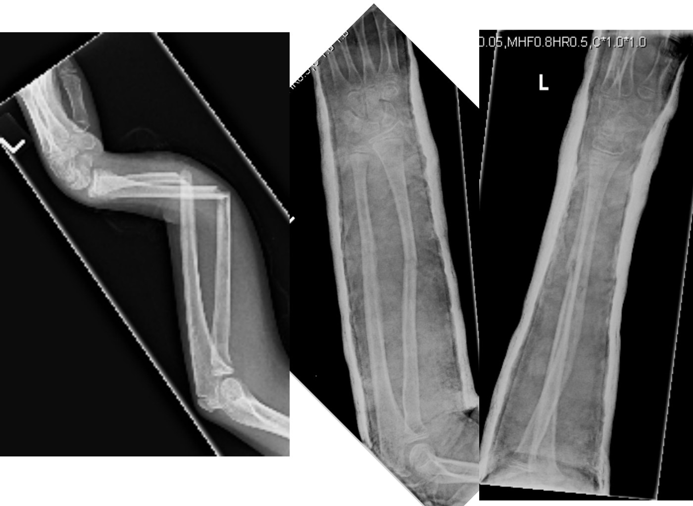
The Pediatric Elbow
An often confusing area: six ossification centres that appear at different ages (none at all in a baby) can look like fracture fragments, and a hurt child won't let you examine much. Know what should be there for the child's age; a fragment where no centre should be yet raises your suspicion.
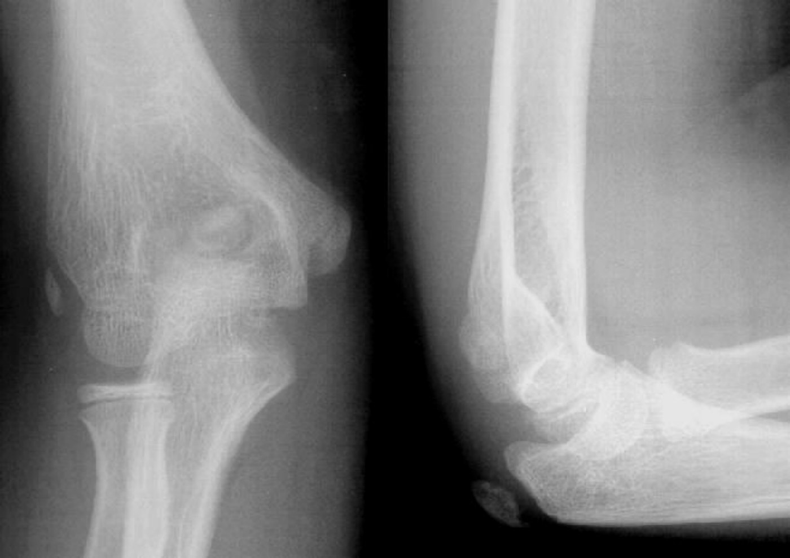
Each small island is an ossification centre, not a fracture. From the elbow deck.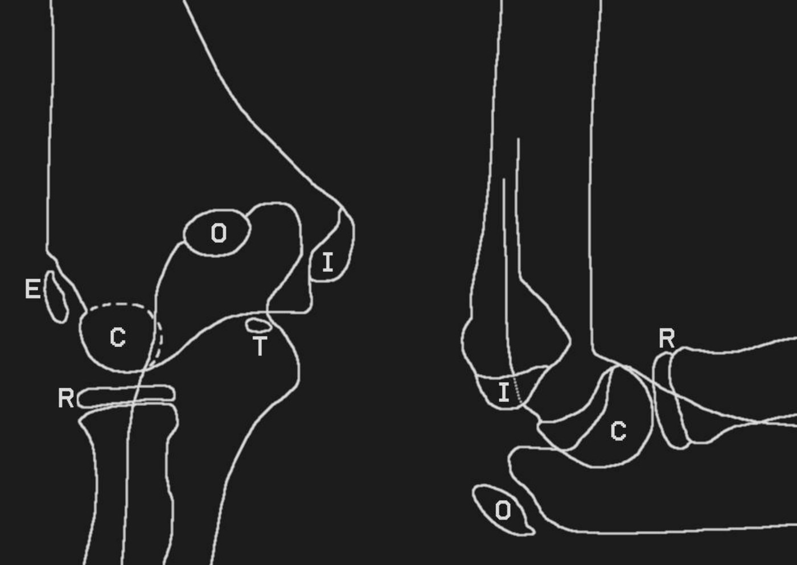
CRITOE, on the AP and lateral. From the elbow deck.| CRITOE | Centre | Seen by about |
|---|---|---|
| C | Capitellum | 1 year |
| R | Radial head | 3 years |
| I | Internal (medial) epicondyle | 5 years |
| T | Trochlea | 7 years |
| O | Olecranon | 9 years |
| E | External (lateral) epicondyle | 11 years |
Rule of thumb: one every 2 years from 1 to 11; the capitellum is the most predictable. A swollen elbow means a high index of suspicion for a bony injury. Call pediatric ortho for a significantly swollen elbow (especially one that isn't ossified yet), any concern about instability, a displaced fracture, or a dislocation that didn't reduce congruently.
Growth Plate Fractures: Salter–Harris
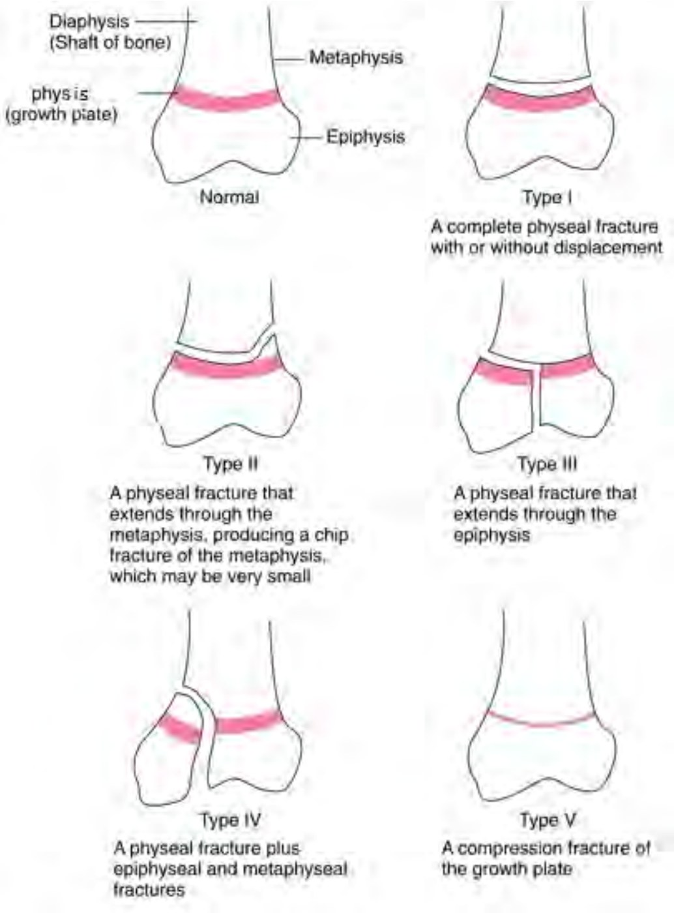
Types I–V. From the deck.| Type | Line runs through | Key points | Treatment |
|---|---|---|---|
| I | The physis only (x-ray may look normal) | Often misdiagnosed as a sprain (e.g. a swollen lateral ankle = distal fibula SH I); excellent prognosis | Stable with closed reduction |
| II | Physis, then out through the metaphysis | Most common; most common at the distal radius; usually good prognosis | Usually stable with closed reduction |
| III | Physis, then out through the epiphysis | Intra-articular; prognosis usually good | Anatomic reduction, usually surgery (screws) |
| IV | Metaphysis, physis and epiphysis | Intra-articular; a bony bridge can form across the physis and arrest growth. Most common at the lateral condyle of the humerus and the distal tibia | Anatomic reduction |
| V | Compression (crush) of the physis | Often missed; diagnosed late, when growth arrest shows. Highest risk of growth arrest | Refer to ortho for follow-up |
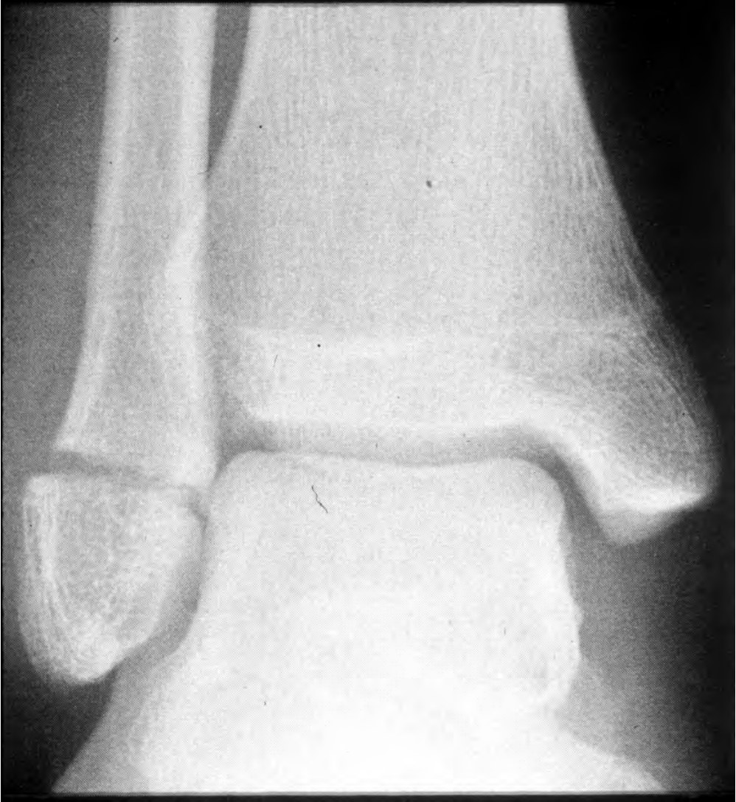
SH I, distal fibula: the “sprain”. From the deck.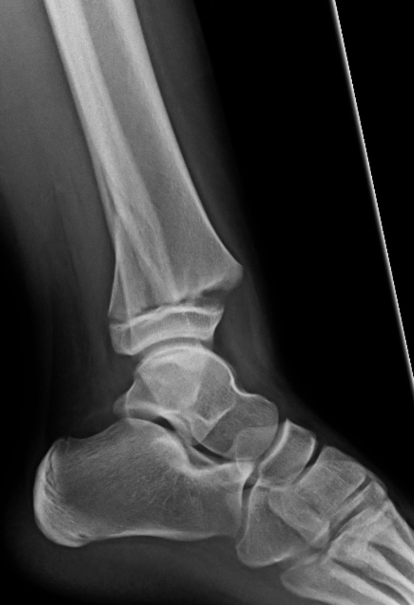
SH II, distal tibia: a metaphyseal corner comes with it. From the deck.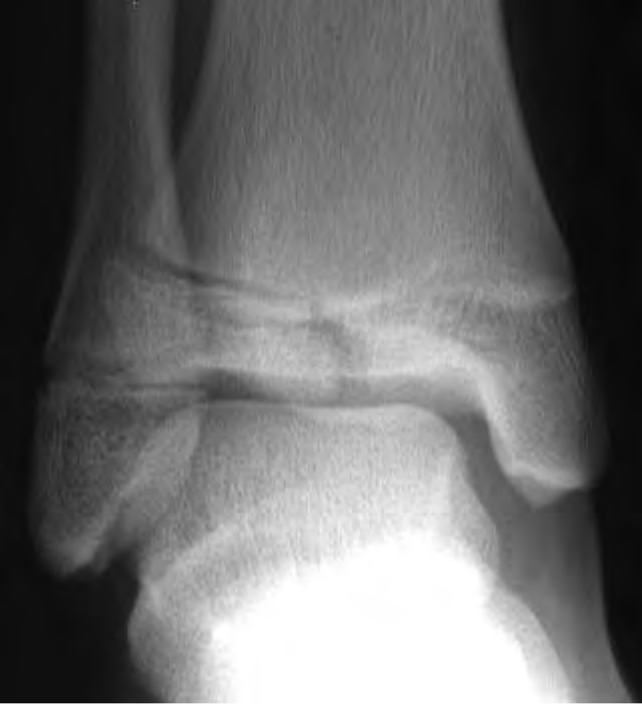
SH III, distal tibia: into the joint through the epiphysis. From the deck.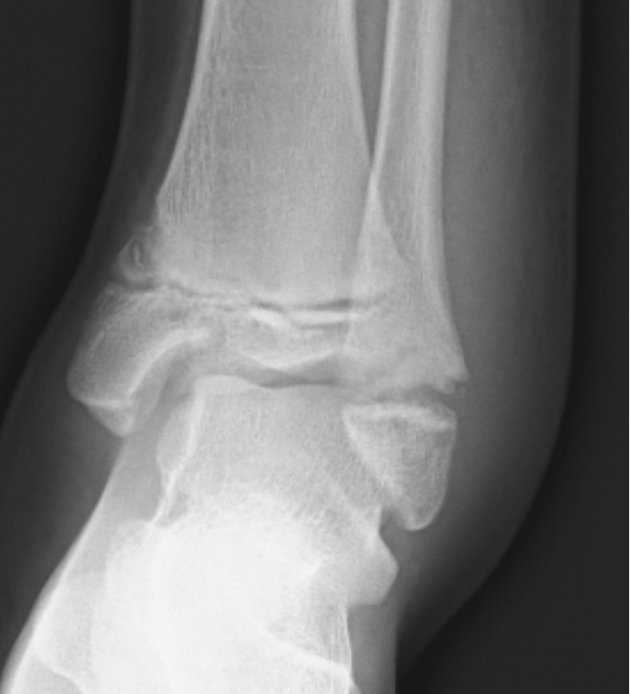
SH IV, distal tibia: straight across all three. From the deck.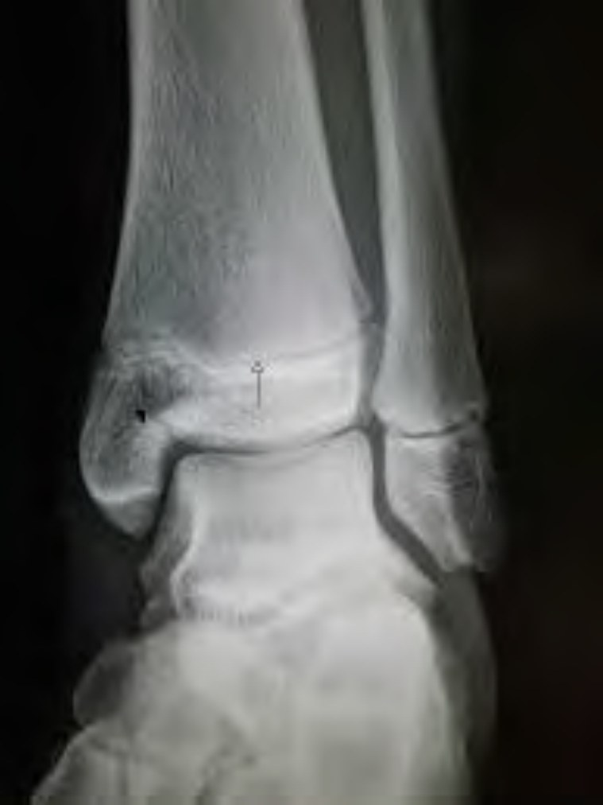
SH V: a crushed, narrowed physis that's easy to miss. From the deck.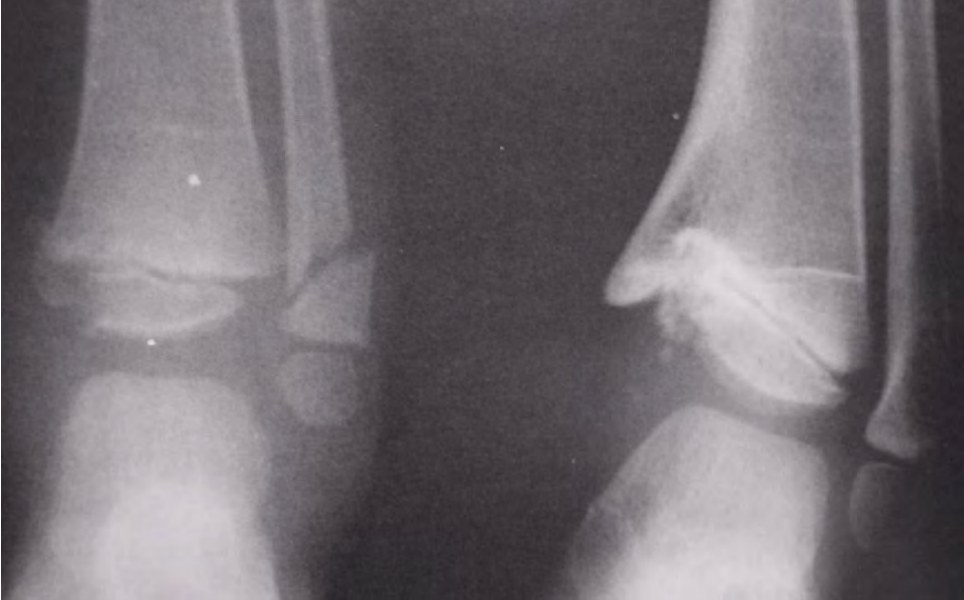
Growth arrest: one side of the physis stopped, the other kept growing, and the ankle angulated. From the deck.About 10% of physeal injuries cause a growth disturbance. Risk rises with the child's age (growth left), severity, type (IV and V worst), the method of reduction, the physis's blood supply, and an open injury. The problem is asymmetric growth: angulation and a length discrepancy, treated according to how much growth is left.
1. Any growth plate injury is serious, whatever the type or site, and needs orthopedic follow-up. 2. Follow it for at least 1 year, preferably 2. 3. Warn the family about growth complications, so they don't get lost to follow-up.
The Apophysis: Avulsions and Apophysitis
Case: the sprinter
A 14-year-old boy has sudden right anterior hip pain in a 100 m dash, with an antalgic limp. → An avulsion of the anterior inferior iliac spine (rectus femoris). In a growth spurt the bones lengthen faster than the muscles and tendons, so the apophysis is under tension, and a burst of contraction pulls it off.
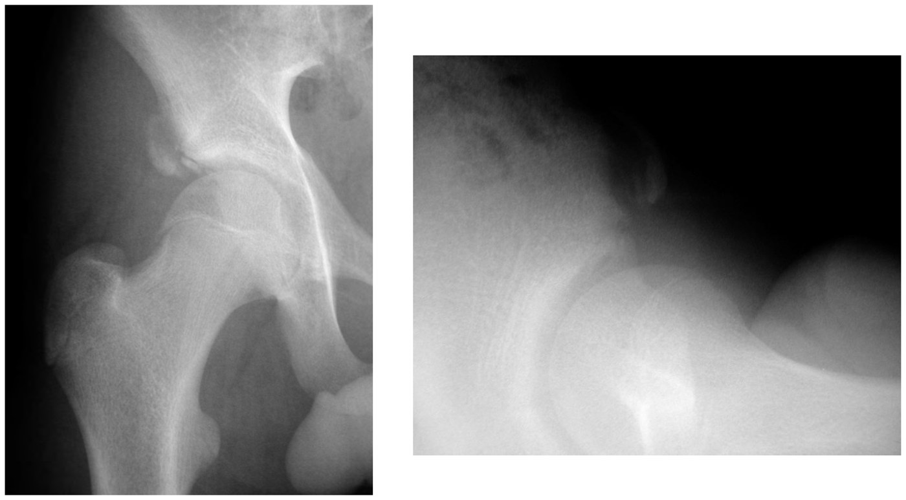
The sprinter's x-rays: a fragment pulled off the anterior inferior iliac spine. From the deck.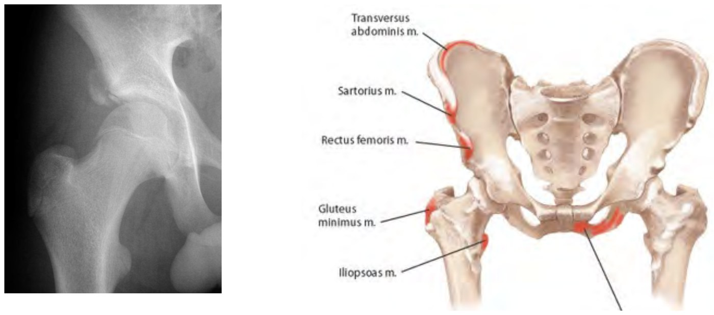
Pelvic avulsion sites and the muscles that cause them. From the deck.Avulsions can happen at any apophysis; common ones are the pelvis, the 5th metatarsal base and the medial epicondyle. Treatment is often non-surgical: relative rest and sometimes immobilization.
Overuse apophysitis: repeated traction causes micro-avulsions at the same sites.
| Apophysitis | Where | Who and what |
|---|---|---|
| Osgood–Schlatter | Tibial tubercle (patellar tendon) | Running and jumping adolescents: girls 8–14, boys 10–15. Gradual localized pain, swelling and tenderness, a bump on the tubercle. Diagnosed clinically |
| Sinding-Larsen(–Johansson) | Lower pole of the patella | The same process at the other end of the patellar tendon |
| Sever's | Calcaneal apophysis (Achilles) | Heel pain in active children |
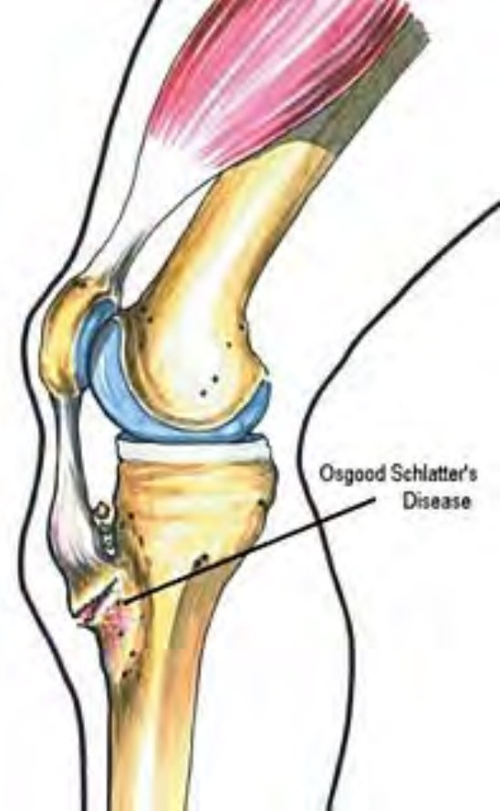
Osgood–Schlatter: the patellar tendon tugs on the tubercle. From the deck.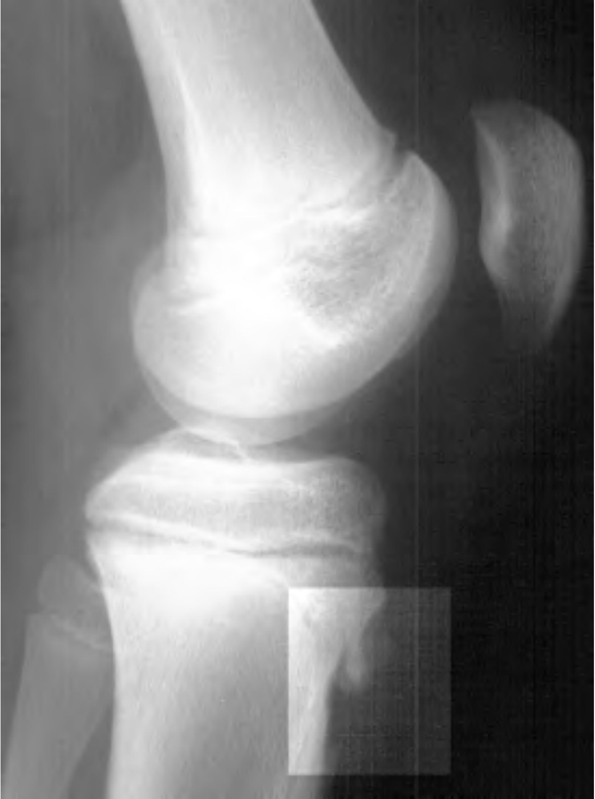
The lateral x-ray: a fragmented, teardrop tubercle. From the deck.Management of apophysitis: educate (benign and self-limiting; it settles, though it can take up to 2 years; excellent prognosis), RICE when acute, activity as tolerated (often modified, which young athletes find hard), and NSAIDs as needed.
Other adolescent overuse injuries: stress fractures and osteochondritis dissecans (OCD). In OCD, repetitive loading (and other factors) cut the blood supply to the bone under the cartilage, which softens and can come loose as a loose body. Without mechanical symptoms it's usually managed conservatively.
Developmental Issues
The hip, the foot, normal leg shapes, the limping child and scoliosis.
Developmental Dysplasia of the Hip
A spectrum from a shallow (dysplastic) acetabulum to a hip that subluxes or dislocates. 1–6 per 1000 live births, the left more often than the right. Every newborn is screened, because the picture and the treatment depend on the age at diagnosis and the severity.
| Risk factors |
|---|
| The “4 Fs”: firstborn, female, family history, frank breech |
| Oligohydramnios (a crowded uterus) |
| Ancestry: more common in white and North American Indigenous populations, less in Black and Asian populations |
| Other packaging problems: torticollis, calcaneovalgus foot, clubfoot, scoliosis |
| Exam | How | Positive |
|---|---|---|
| Barlow (“sign of exit”) | Supine, hips and knees at 90°; adduct the thigh and push backward | The femoral head slips out: a reduced but dislocatable hip. Reduce it afterwards |
| Ortolani (“sign of entry”) | Same position, long finger on the greater trochanter; lift and abduct the thigh | The head clunks back in: a dislocated hip that reduces |
| Galeazzi | Hips and knees flexed, feet level | One knee lower: the short side (subluxed or dislocated) |
| Range of motion | Abduct the flexed hips | Limited abduction |
| Walking child | Watch the gait | A painless limp or waddle |
Barlow and Ortolani are unreliable after 3–6 months, when muscle tone resists them. Also do a general exam for other musculoskeletal problems and dysmorphism.
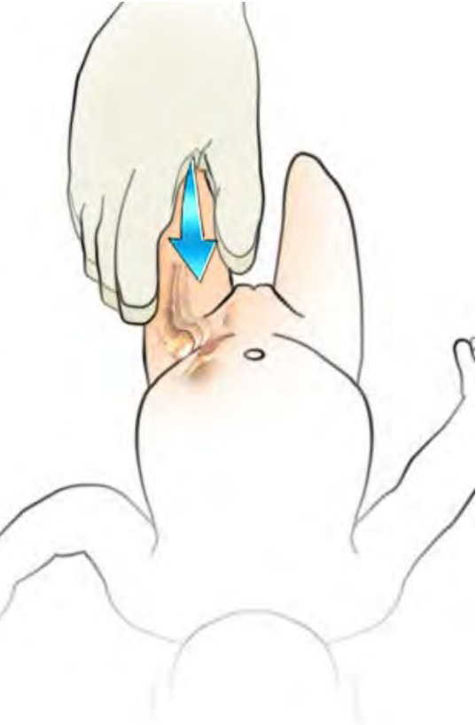
Barlow: adduct and push back. From the deck.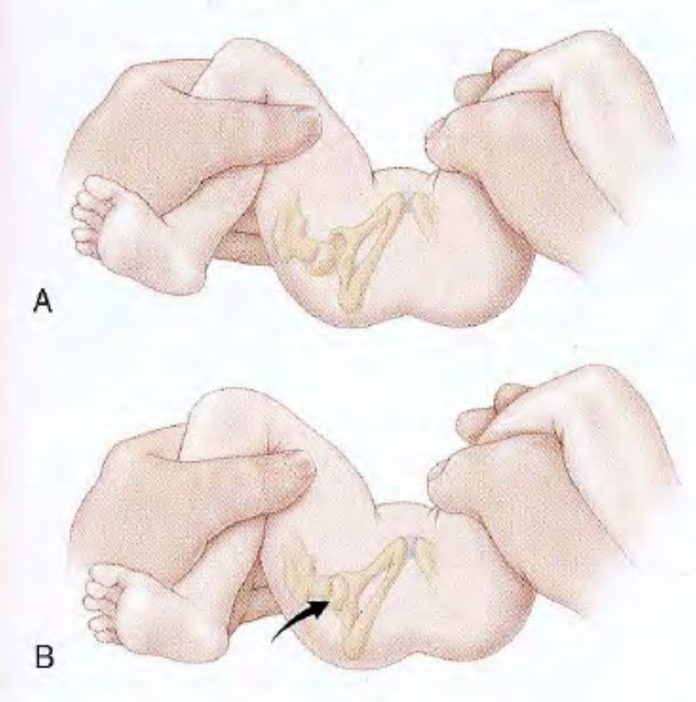
Ortolani: lift and abduct, and it clunks in. From the deck.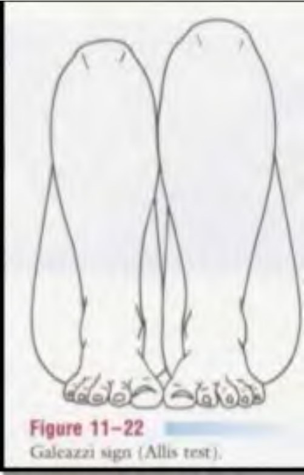
Galeazzi: the low knee is the bad hip. From the deck.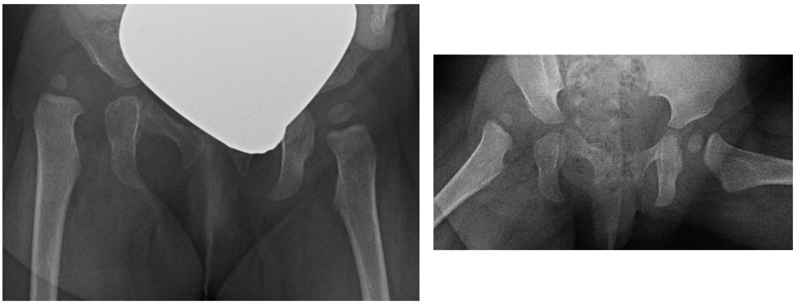
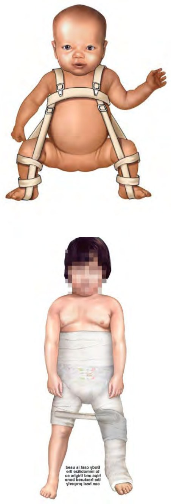
Pavlik harness and spica cast. From the deck.| Age | Treatment |
|---|---|
| Up to 6 months | Pavlik harness: hips flexed and abducted, pointing the head into the acetabulum so both develop normally |
| Older, or the harness fails | Closed reduction and a spica cast |
| Later still | Open reduction ± osteotomies |
Diagnose early: treatment is simpler and long-term disability is prevented.
Clubfoot (Congenital Talipes Equinovarus)
The ankle is plantarflexed (equinus) and the heel and forefoot are in varus. There's a genetic component, and associations with spina bifida and other syndromes. Untreated, it's a progressive, stiffening deformity that badly limits walking and activity and makes footwear a problem.
Started early, while the foot is small and malleable; each cast holds the latest correction.
Under local anaesthetic, to bring the foot to about 15° of dorsiflexion.
Full time for 3 months, then at night for 2–3 years, feet turned out with the legs slightly apart.
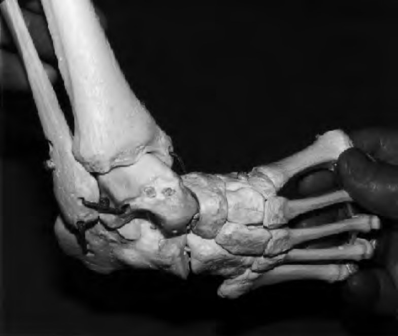
The skeleton of a clubfoot: pointed down and turned in. From the deck.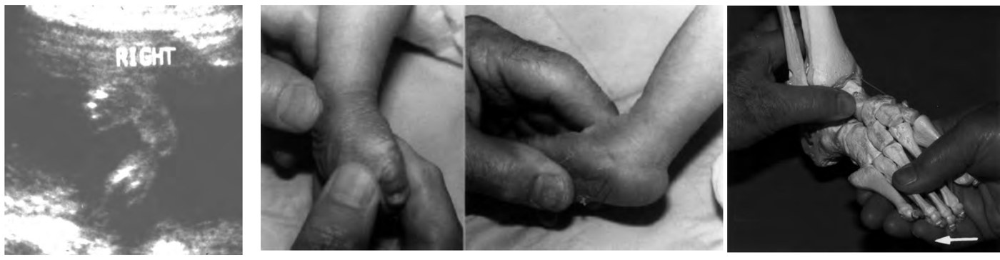
Ponseti manipulation and serial casts. From the deck.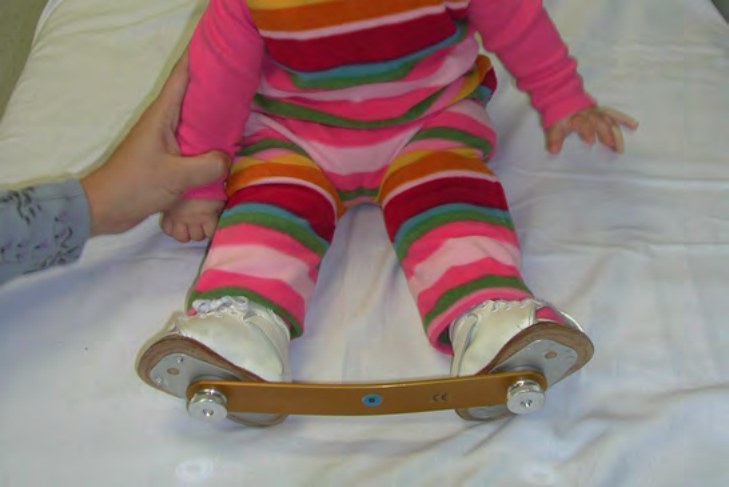
Boots and bars. From the deck.For a foot that resists Ponseti or recurs: a posteromedial (comprehensive) release, surgically lengthening the contracted structures and realigning the foot. It's a much bigger dissection of joints, tendons and ligaments.
Rotational and Angular Variation
In-toeing, out-toeing, knock knees, bowlegs and flat feet are very common referrals, and nearly all are normal development that rarely affects function or appearance. Know the normal pattern so you don't overtreat.
| Shape | What it is | Normal |
|---|---|---|
| Genu varum (bowlegs) | Knees point away from the midline | Birth to 2 years: reassure |
| Genu valgum (knock knees) | Knees point toward the midline | 3 to 7 years: reassure |
| In-toeing / out-toeing | The foot progression angle: how far the foot points off the line of walking | Wide normal range; within about 10–15° either way is likely fine |
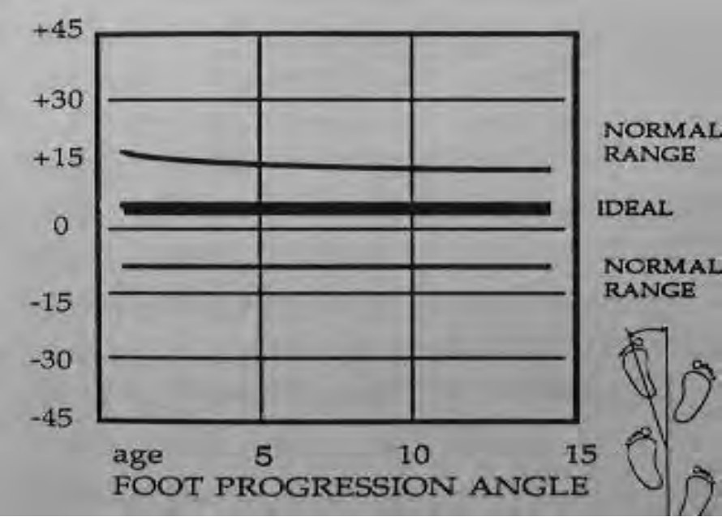
Foot progression angle by age, with the normal range. From the deck.| Warning signs (angular) |
|---|
| Excessive variation |
| Short stature |
| Progressive genu varum (it should be gone by 2) |
| Asymmetry |
| Varum or valgum persisting past 7–8 years |
| A known or suspected cause: nutritional deficiency, metabolic bone disease, skeletal dysplasia, previous trauma |
The Child with a Limp
Many causes, and the child's age reorders the differential. Child Health small groups go deeper; the hip conditions are their topic.
| Cause | Typical age | Note |
|---|---|---|
| DDH (missed in infancy) | Toddler | A painless limp; not a teenager's first presentation |
| Clubfoot | Seen at birth | Rarely a mystery later |
| Transient synovitis | Any, most often young children | Inflammation of the hip's synovial lining |
| Legg–Calvé–Perthes | About 4–8 | Avascular necrosis of the femoral head |
| Slipped capital femoral epiphysis | Adolescents with an open proximal femoral physis | The femoral head epiphysis slips off the neck through the physis |
| Other | Any | Overuse injuries; trauma, accidental or not; neuromuscular disorders; inflammatory arthritis |
Gait warning signs: asymmetry, progression, a leg length difference, pain, deformity, or a suspected underlying condition.
Scoliosis
A structural lateral curvature with rotation of the spine, of at least 10°. The rotation matters as much as the curve.
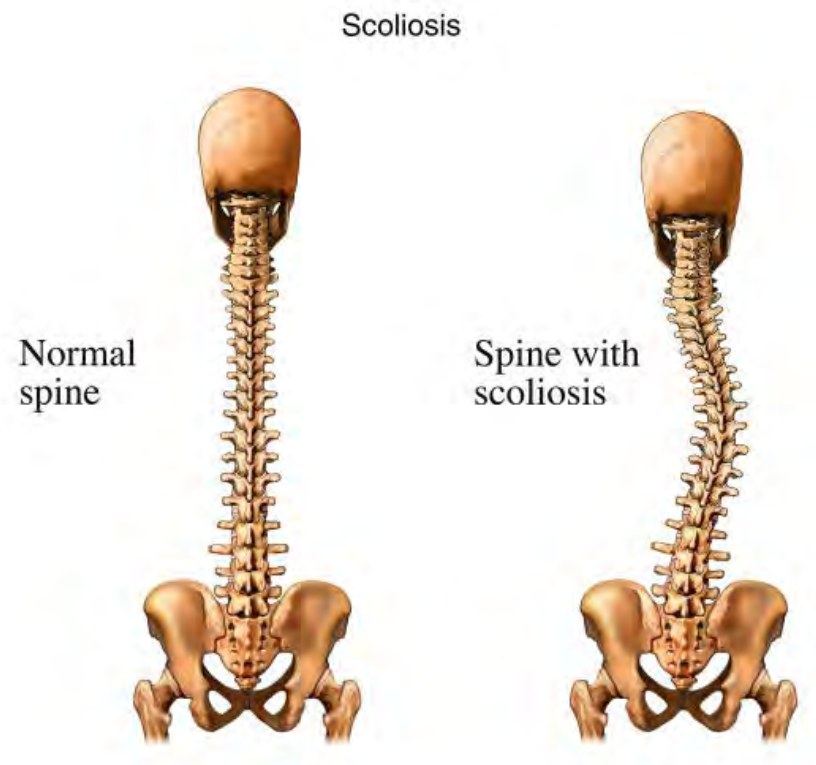
A normal spine and one with scoliosis. From the deck.| Type | Cause |
|---|---|
| Idiopathic | Most common; typically adolescent onset; F > M; runs in families |
| Neuromuscular | Cerebral palsy, spina bifida, neurofibromatosis, spinal muscular atrophy |
| Congenital | A vertebral anomaly (e.g. a hemivertebra) |
| Other secondary | Post-traumatic, etc. |
| Step | What to do |
|---|---|
| History | Rarely painful; often found incidentally; the complaint is usually a rib hump. A neurological review of systems matters: rule out a neuromuscular or congenital cause. Family and past medical history |
| Exam | Properly undressed (back and a full neuro exam). Gait, general exam. Look for spinal dysraphism: a sacral dimple, hairy patch, lipoma or haemangioma. Palpate the spinous processes. Assess the curve's severity and flexibility. Thorough neuro exam |
| Adams forward bend | Bend to touch the toes: the rotation shows as a rib prominence on the side of the convexity. A purely postural curve has no hump |
| X-ray | The first and often only test: location, levels, direction, magnitude (the Cobb angle), and any congenital anomaly, trauma or tumour. MRI only if a neurological cause is suspected |
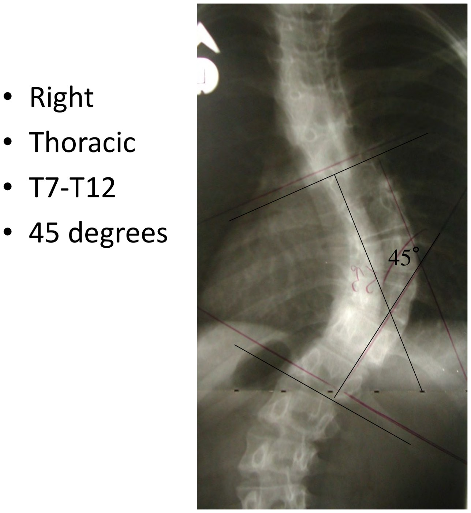
Describe it: right, thoracic, T7–T12, 45°. The Cobb angle uses lines along the end plates of the most tilted vertebrae (you won't have to measure one). From the deck.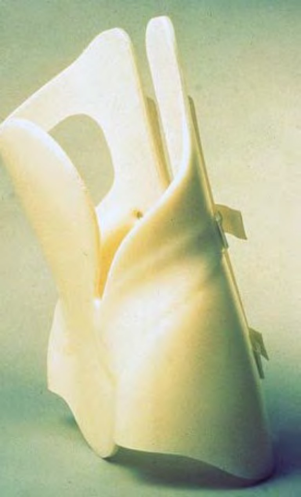
A TLSO (“Boston”) brace, worn at least 16 hours a day. From the deck.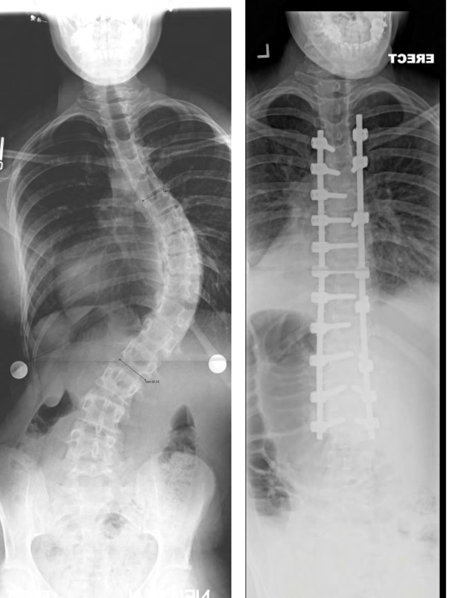
Pedicle screw instrumentation and fusion. From the deck.| Risk of progression is higher with | Management |
|---|---|
| Girls > boys; younger physiological age, especially pre-menarchal; bigger curves; double > single; thoracic > lumbar | Educate (natural history, risk of progression, monitoring plan). Orthosis for the right curve, size and age. No drugs. Surgery depending on the curve and its risk of progression: the goal is to stop progression by fusing the curve, with instrumentation holding the correction while the fusion takes. Modern pedicle screws give more correction and stability, at more cost and longer surgery than the old single rods. |
Knowledge Checks
What the module asks
A physeal injury in a long bone raises the risk of? → Growth arrest (not infection, nonunion or nerve injury). Which physeal injury carries the highest risk of growth arrest? → Compression of the growth plate (SH V); the others, properly stabilized, leave the physis largely intact. Which child doesn't need ortho? → A 5-year-old with genu valgum (normal at 3–7); a 6-month-old with a leg length difference needs a DDH work-up, and a clubfoot needs treatment. Scoliosis often presents with back pain? → False.
Built from Dr. Caitlin Cassidy's “Pediatric Orthopedics” deck and its four recordings, the separate “Pediatric Elbow” deck and recording, and the module's knowledge checks. Clinical photographs of infants and children (clubfeet, bowed and knock-kneed legs, scoliotic backs, the forward bend test, surgery) are left out. Notes: the recording says the sprinter's avulsion is at the anterior inferior iliac “crest”; it's the spine (rectus femoris). It places Sinding-Larsen disease at the distal tibia; the slide's distal patella is right. The captions turn “pre-menarchal” into “premenopausal”. The Elentra objectives ask for the pathophysiology and management of transient synovitis, slipped capital femoral epiphysis and Legg–Calvé–Perthes, but the module only lists them and leaves the detail to the Child Health small groups, so this page does the same.